13/10/2026 · 140 ảnh validation · 150 job thật qua API · không thay checkpoint/ngưỡng demo.
| Lớp | GT | Precision (conf 0,25) | Recall (conf 0,25) | AP50–95 |
|---|---|---|---|---|
| Xe máy | 248 | 87,8% | 95,6% | 74,9% |
| Người đội mũ | 176 | 85,9% | 90,3% | 79,0% |
| Người không đội mũ | 107 | 65,1% | 76,6% | 60,9% |
mAP50=88,6%; mAP50–95=71,6%. AP đo riêng ở ngưỡng candidate 0,001; không thay ngưỡng backend.
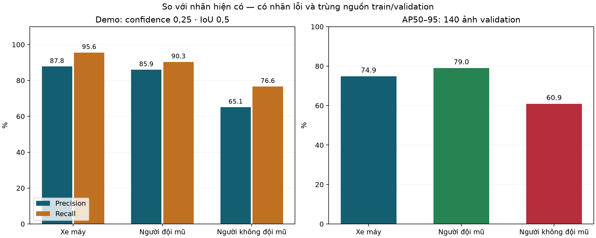
GT nghĩa là annotation hiện có; không mặc định mọi GT đều đúng. Đây là 8 ca chọn vì lỗi cao, không dùng để suy ra tỷ lệ nhãn sai toàn dataset.
Nhãn cần sửa: GT1 bao người lái nhìn thấy tóc, chưa thấy mũ trên đầu; GT2 còn bao người đứng cạnh xe và người đi bộ phía xa. Cần phân biệt rider với pedestrian theo phạm vi đề tài.
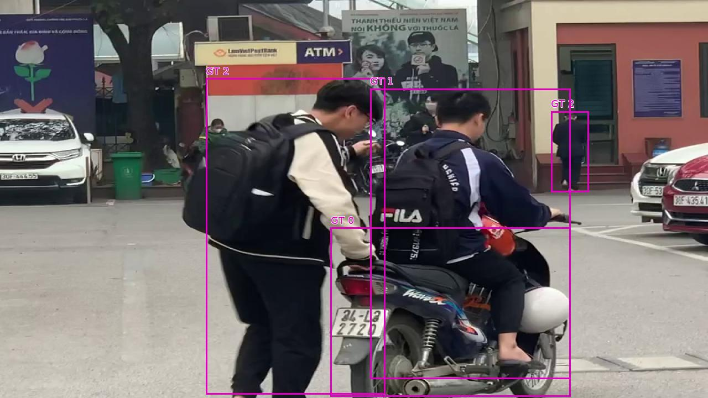
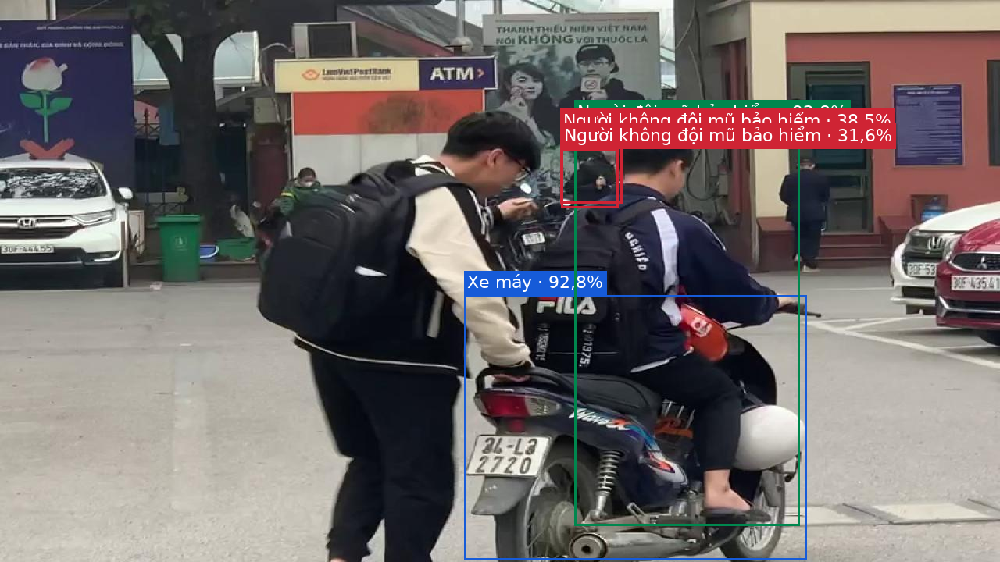
Nhiều đối tượng nhỏ/xa và box gần nhau. Rà lại GT2 bên phải và ranh giới rider trước khi quy kết các box sai cho model.
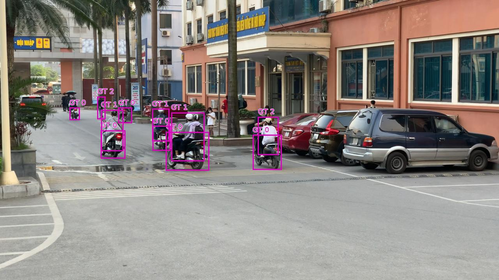
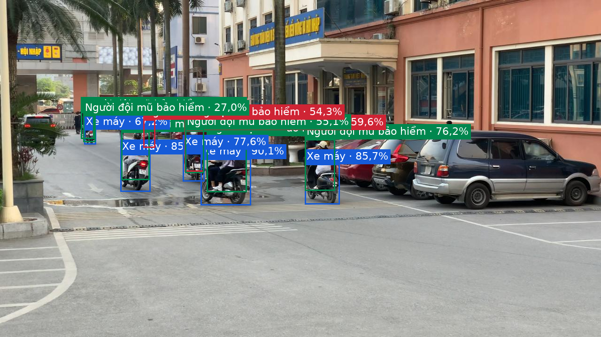
Nhãn cần sửa: hai box GT2 chồng lên cùng người phụ nữ đứng tại quầy, không ngồi trên xe máy. Đây là ca bỏ sót theo nhãn nhưng không phải bằng chứng bỏ sót rider vi phạm.
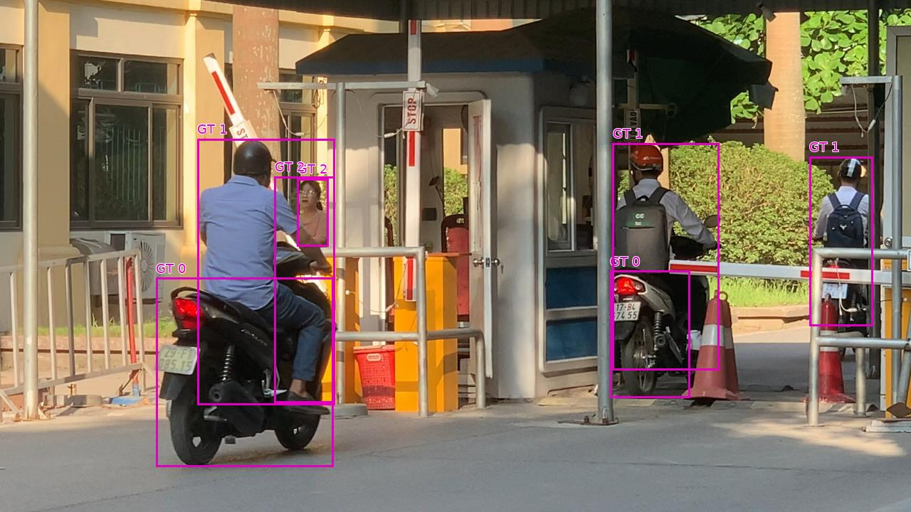
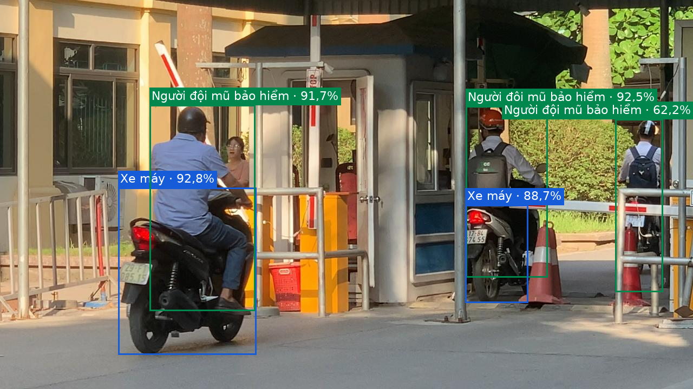
Model tạo nhiều box ở vùng xa và xe đỗ chưa được nhãn bao quát. Cần thống nhất quy tắc xe đỗ và rà nhầm đội mũ/không đội mũ trên đối tượng nhỏ.
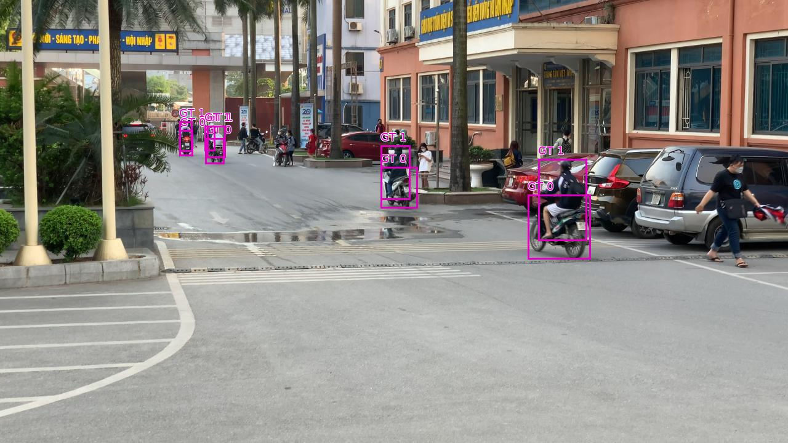
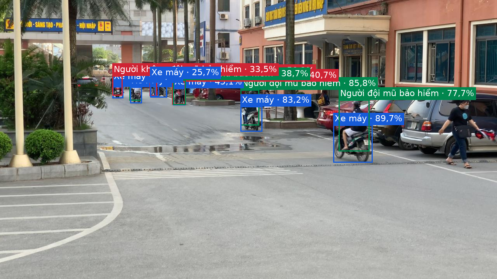
Người/xe bị cắt ở mép ảnh; model tạo nhiều box lớp 2 chồng nhau. Đây là tình huống khó cần bổ sung nhãn nhất quán và mẫu huấn luyện.
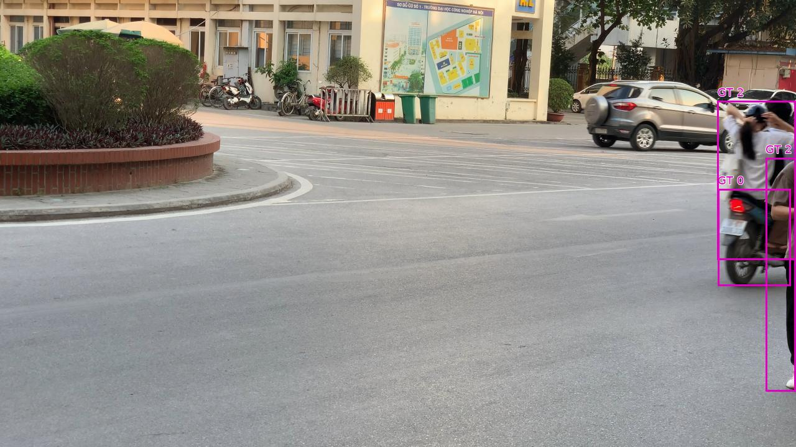
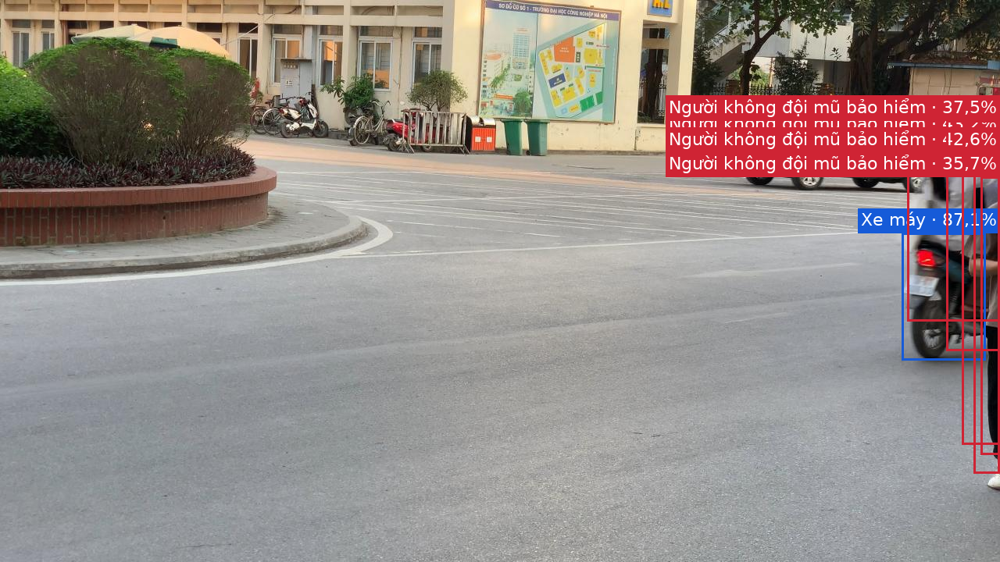
Box GT1 gộp vùng hai người ngồi trên cùng xe, có trạng thái mũ khác nhau cần kiểm tra. Cần một box riêng cho từng rider; không nên dùng một box bao cả hai.
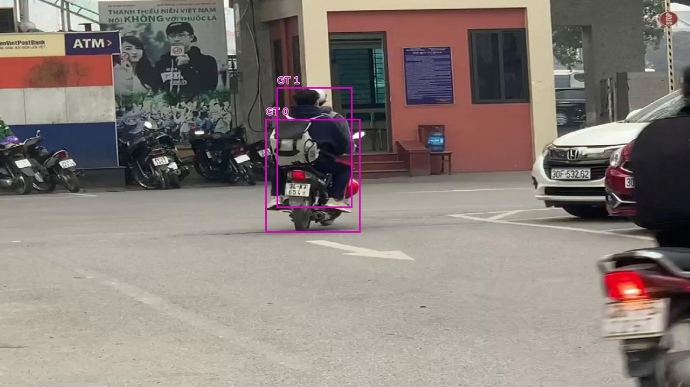
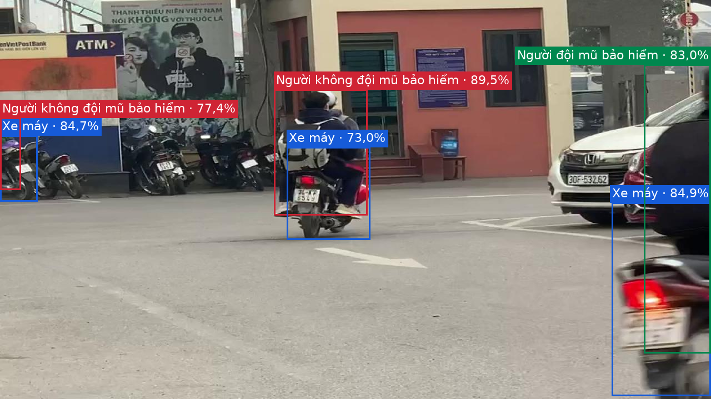
Nhiều đối tượng nhỏ/xe đỗ; có box trùng và box ngoài tập nhãn hiện có. Cần kiểm tra bằng mắt thay vì coi mọi FP thống kê là nhầm thật.
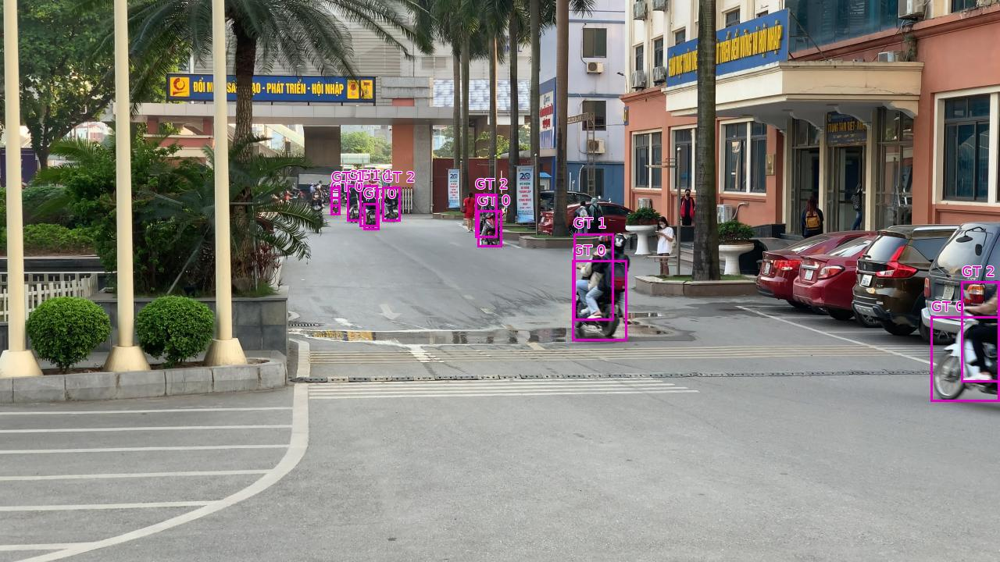
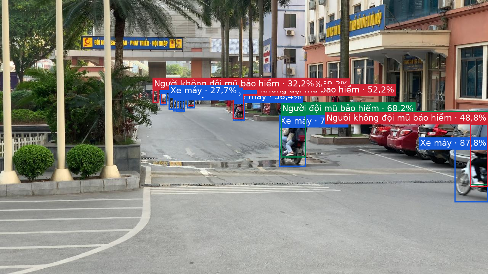
Hai người trên xe và vùng che khuất: cần rà nhãn riêng từng người, khả năng box người bị gộp hoặc thiếu.
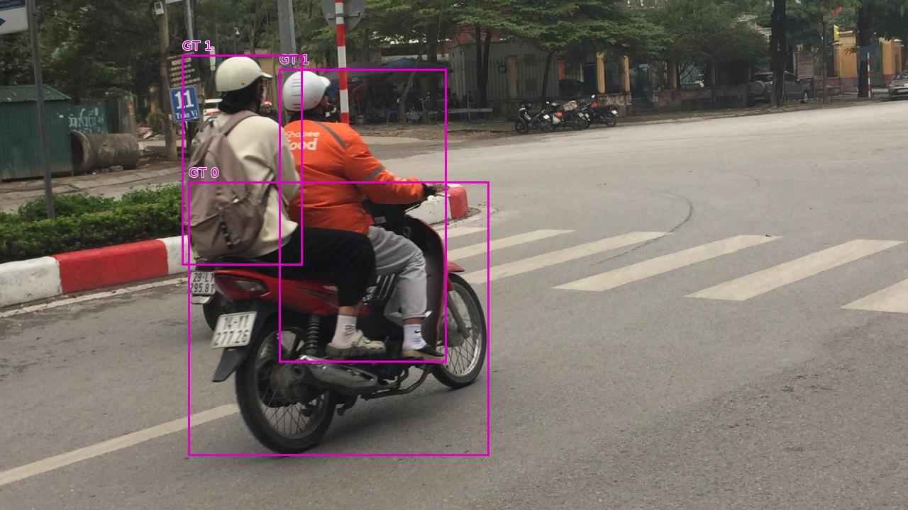
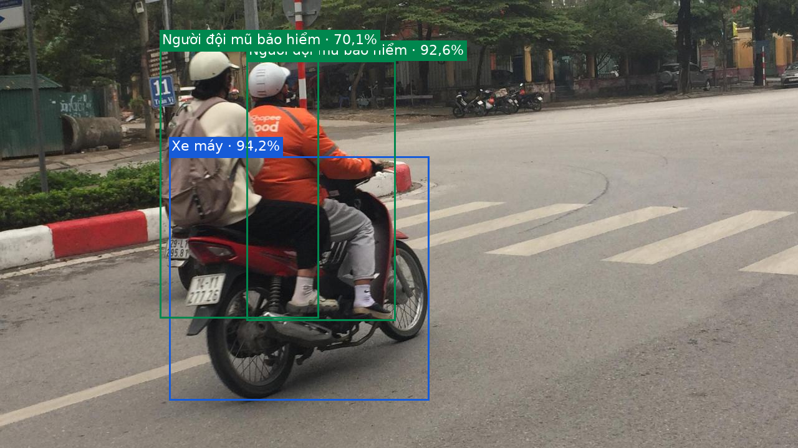
Chưa có annotation đầy đủ theo frame nên không công bố accuracy video hoặc đếm số người vi phạm.
Báo cáo đầy đủ và quy trình train · Kết quả API từng mẫu · Chi tiết AP · Bằng chứng trùng dữ liệu